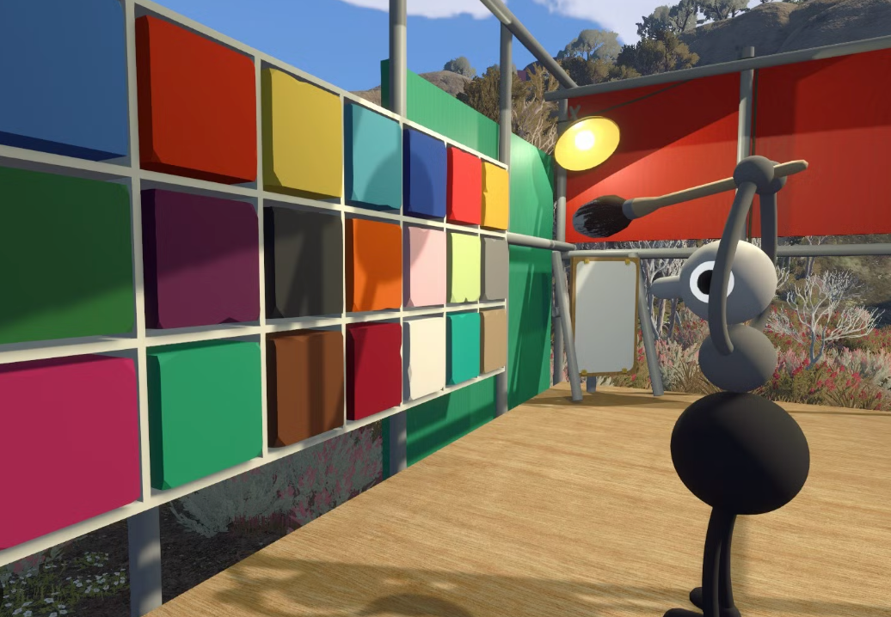

Where to find the paint station

Once your group leaves the opening room where the controls are introduced, you enter a broad field with greenery around its edges. Near the middle is a small structure filled with coloured squares. This is the early-game paint station.
Take a moment to let everyone choose a distinctive look. Colour is useful beyond style: it makes it easier to recognise teammates while you explore, carry items or communicate from a distance.
Change a character’s colours step by step
- Pick up the brush. One player needs to carry the brush from the paint station.
- Choose a colour. While holding the brush, interact with the desired coloured square on the wall.
- Stand by a teammate. The brush holder should move close to the friend who wants a new colour.
- Paint a character segment. Interact with the part of that teammate’s character you want to recolour.
- Repeat as needed. Pick another swatch and paint another segment until the group is happy with the result.
Why you need a teammate
You cannot normally paint your own character. Another player has to hold the brush and apply the colour for you. It is a small but very Big Walk-style co-op moment: agree on a palette, then trust your friends not to turn you entirely brown.
If the group wants coordinated colours, decide before anyone starts painting. For example, use one bright colour per person, or assign a shared accent colour that helps you regroup in busy areas.
A later colour option
There is also a later-game colour-related option connected with the Big Makeover achievement and the idea of getting shiny. This guide stops here to avoid spoilers. Explore that route only when your group is ready for later-game discoveries.
Character colour FAQ
Can I change my own colour?
Not at the paint station. A friend needs to hold the brush and paint you.
Can I paint more than one section?
Yes. Choose a swatch again and interact with another part of a teammate’s character.
Where is the colour station?
It is in the large grassy field after the opening controls room, inside a structure with coloured squares and a brush.
Does changing colour affect puzzles?
Use it primarily for recognition and fun. Avoid assuming a colour is a puzzle answer unless the game itself clearly shows that it is relevant.
Related guides
Beginner FAQ · Backpack locations · Puzzle index · How to host a game
This spoiler-light community guide is based on gameplay information supplied by the site owner. Last reviewed September 1, 2026.